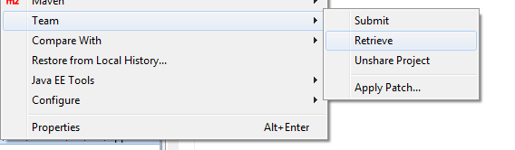

Retrieving the OpenUI5 Application Project from the OpenUI5 Repository
Process how to retrieve the OpenUI5 application project from the OpenUI5 repository
Before retrieving the OpenUI5 application project from the OpenUI5 repository, make sure that
-
You have created a OpenUI5 application.
-
You have shared and submitted the OpenUI5 application.
-
The ABAP system you are using needs to be available in your SAP GUI Logon group.
To retrieve the OpenUI5 application project from the OpenUI5 repository, proceed as follows:
-
Create a generic project in Eclipse: Choose
 New
New  Project General Project
Project General Project  . Enter the same name that is used for the OpenUI5 BSP application
artifact in the ABAP system. Choose Finish.
. Enter the same name that is used for the OpenUI5 BSP application
artifact in the ABAP system. Choose Finish. -
Share the OpenUI5 application project with Team Provider by choosing the existing BSP application.
-
Synchronize the OpenUI5 application project as follows: In the context menu of the selected project, choose
Team Retrieve . Next, choose Select All to select the
conflicting files as well.
- Choose Finish.
Application-project-related files have been retrieved from the OpenUI5 Repository.
The OpenUI5 application project can now run locally in Eclipse.